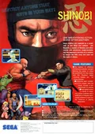

61

Shinobi
que B ataque (estrellas ninja; de cerca, golpe), A salte (arriba + A sube de piso, abajo + A baja) y R haga la magia ninja (una vez por fase). ¿El J2 juega en su turno con sus mandos?
🔎 Mirar en la bartop:
- ¿A dos se juega a la vez o por turnos?
Botones
 | Atacar (estrellas ninja; de cerca, golpe) |
 | Saltar (con arriba o abajo, cambiar de piso) |
 | Hacer la magia ninja (una vez por fase) |
  | Empezar |
 | Meter una moneda |
+  | Salir del juego |
 ): «Truco»: probablemente el ataque especial — ¿es así?
): «Truco»: probablemente el ataque especial — ¿es así? (J2)): Disparar en esa dirección — ¿es así?
(J2)): Disparar en esa dirección — ¿es así?